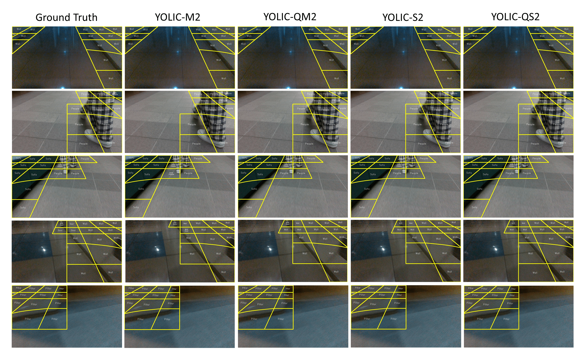

In the context of Tiny AI, we introduce "You Only Look at Interested Cells" (YOLIC), an efficient method for object localization and classification on edge devices. Seamlessly blending the strengths of semantic segmentation and object detection, YOLIC offers superior computational efficiency and precision. By adopting Cells of Interest for classification instead of individual pixels, YOLIC encapsulates relevant information, reduces computational load, and enables rough object shape inference. Furthermore, it eliminates the necessity for bounding box regression techniques by leveraging prior knowledge of object positioning, size, and shape. To tackle the issue of single-label classification limitations, a multi-label classification approach is applied to each cell, effectively recognizing overlapping or closely situated objects. This paper presents extensive experiments on multiple datasets, demonstrating that YOLIC achieves detection performance comparable to the state-of-the-art YOLO algorithms while surpassing in speed, exceeding 30fps on a Raspberry Pi 4B CPU.
BibTex Code Here